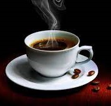
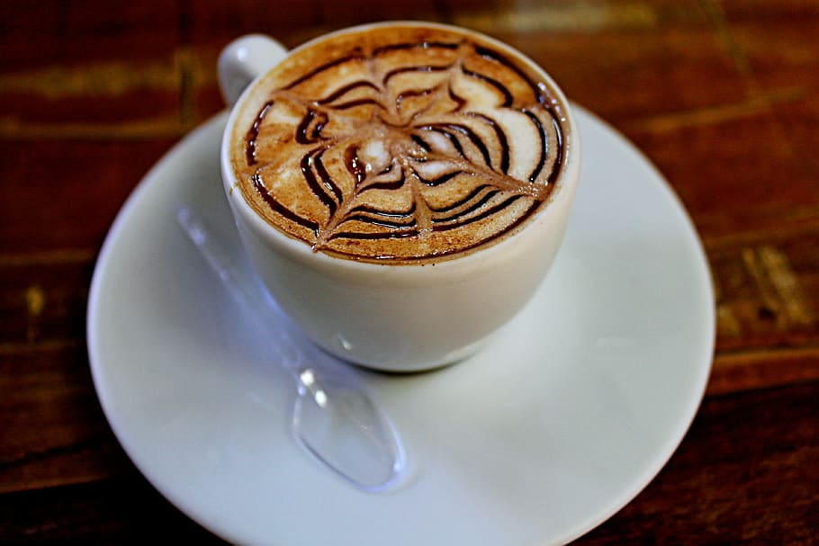
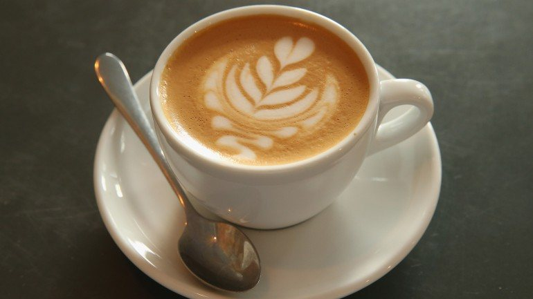
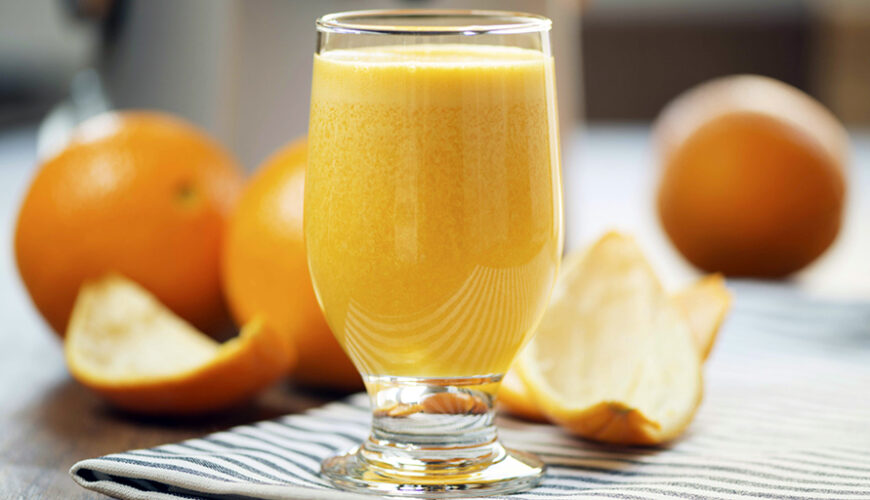
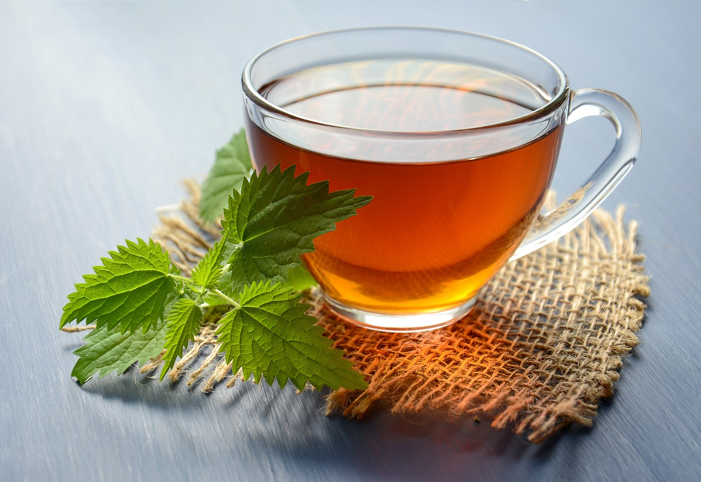

-
ExpressoR$ 3,00
- Café
O clássico conforto de um belo expresso, ótimo pela manhã e ao fim da tarde. Contém apenas café expresso, adoce a gosto.
-
CappuccinoR$ 5,99
- Café
- Leite
Uma bela e relaxante xícara de cappuccino. Produzido com café expresso, leite e creme de leite, adoce a gosto.
-
Cappuccino Max
 R$ 10,00
R$ 10,00- Café
- Leite
Um cappuccino max para aqueles que tiveram um dia realmente difícil. Produzido com café expresso, leite, creme de leite, chantilly e chocolate moído, adoce a gosto.
-
Café Latte
 R$ 4,50
R$ 4,50- Café
- Leite
Um cremoso café latte pode ser acolhedor ao coração. Um café expresso e leite vaporizado, adicionando uma quantidade generosa de espuma do leite, adoce a gosto.
-
MacchiatoR$ 3,50
- Café
- Leite
Para aqueles que desejam apenas uma leve quantidade de leite, eis o Macchiato. Um café expresso com uma pequena quantidade de espuma de leite sobre a bebida, adoce a gosto.
-
Café com Leite
 7,00
7,00- Café
- Leite
Uma generosa caneca de café com leite, perfeita para conversas longas. Um café expresso junto a uma quantidade igual de leite, adoce a gosto.
-
Café Americano
 2,50
2,50- Café
Muito popular pela simplicidade e gosto levemente diferente. Um café expresso com preparo diferente, usando adição de água quente diretamente no café, adoce a gosto.
-
Chocolate Quente
 7,50
7,50- Leite
Para aqueles que não sentem o amor pelo café, ainda temos chocolate. Uma caneca de chocolate quente, preparado com leite e chocolate derretido.
-
Suco Natural8,00
- Suco
Um suco de frutas natural ideal para dias um pouco mais quentes. Feito de uma fruta entre laranja, morangos, maçãs ou limões, junto a gelo, adoce a gosto.
-
Chá Comum2,50
- Chá
Um agradável, porém simples, chá de sua preferência. Dentre os chás podem ser escolhidos hortelã, maçã com canela e chá preto, adoce a gosto.